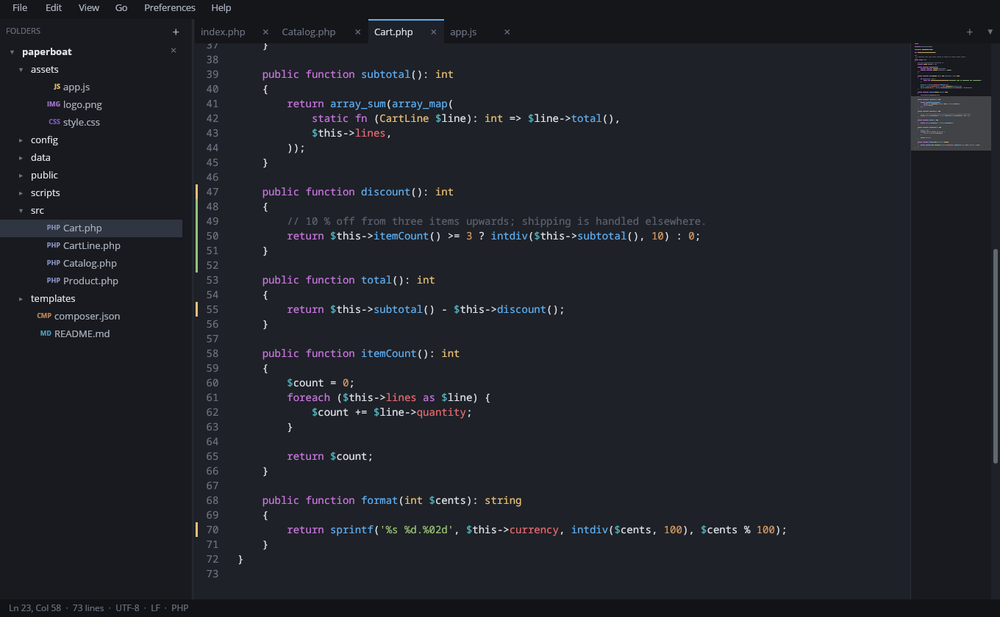

v0.1Linux & Windows (preview) · free & open sourceLinux ve Windows (ön sürüm) · özgür ve açık kaynak
The editor that opens before you blink.Göz açıp kapayana kadar açılan editör.
VeloEdit is a fast, light, GPU-accelerated text editor for Linux, in the spirit of Sublime Text. It starts in well under 100 ms, brings your unsaved work back after a restart, and never makes you wait for the disk.VeloEdit, Sublime Text'in ruhunda, hızlı, hafif ve GPU hızlandırmalı bir Linux metin editörü. 100 ms'nin çok altında açılır, yeniden başlattığında kaydedilmemiş işlerini geri getirir ve seni asla diski beklemeye zorlamaz.
Linux x86_64 and aarch64 · Windows 10/11 x64 (preview) · no admin rights needed · MIT licensedLinux x86_64 ve aarch64 · Windows 10/11 x64 (ön sürüm) · yönetici hakkı gerekmez · MIT lisanslı
VeloEdit

< 100 msto the first windowilk pencereye
~50languages highlighteddil renklendirilir
0telemetry, accounts or adstelemetri, hesap ya da reklam
MITfree, foreverözgür, her zaman
Everything you reach for, nothing in the wayİhtiyacın olan her şey, yolunda hiçbir şey yok
The features of a serious editor, in a single native binary. No Electron, no runtime, no plugins to install first.Ciddi bir editörün özellikleri, tek bir yerel çalıştırılabilir dosyada. Electron yok, çalışma zamanı yok, önce kurulacak eklenti yok.
Instant startAnında açılış
Opens in well under 100 ms. Huge files load lazily, and the interface never blocks on disk, git or highlighting.100 ms'nin çok altında açılır. Büyük dosyalar tembel yüklenir; arayüz disk, git ya da renklendirme yüzünden asla takılmaz.
Hot exitSıcak çıkış
Quit any time. Tabs, folders and unsaved drafts come back exactly as you left them. Unsaved tabs are named after their first line.İstediğin an çık. Sekmeler, klasörler ve kaydedilmemiş taslaklar bıraktığın gibi geri gelir. Kaydedilmemiş sekmeler ilk satırlarından adlanır.
Multi-cursor editingÇoklu imleç
Ctrl+click, Ctrl+D, Ctrl+Alt+↑/↓. Regex find & replace, soft wrap, bracket matching and an undo that never loses a step.Ctrl+tık, Ctrl+D, Ctrl+Alt+↑/↓. Regex bul & değiştir, satır kaydırma, parantez eşleme ve hiçbir adımı kaybetmeyen geri alma.
Syntax highlightingSöz dizimi renklendirme
About 50 languages: 25 tree-sitter grammars (PHP with its HTML, CSS and JS, TypeScript, Python, Rust, Go, Markdown, YAML …) plus a light lexer for the rest.Yaklaşık 50 dil: 25 tree-sitter grameri (HTML, CSS ve JS'siyle PHP, TypeScript, Python, Rust, Go, Markdown, YAML …) ve geri kalanı için hafif bir sözcük çözümleyici.
Code folding everywhereHer dilde kod katlama
Indentation-based folding for every language, with gutter arrows, Fold All and Fold Level N in the command palette.Her dil için girintiye dayalı katlama: kenar okları, komut paletinde Hepsini Katla ve N. Seviyeyi Katla.
Split viewBölünmüş görünüm
The same file in two panes, side by side or stacked, each with its own scroll position and caret. Drag tabs to reorder them.Aynı dosya iki bölmede, yan yana ya da alt alta; her birinin kendi kaydırma konumu ve imleci var. Sekmeleri sürükleyerek sırala.
Project toolsProje araçları
Multi-root sidebar, Ctrl+P fuzzy open, Ctrl+Shift+P command palette, and find in files with filters like *.php, !vendor.Çok köklü yan çubuk, Ctrl+P bulanık dosya açma, Ctrl+Shift+P komut paleti ve *.php, !vendor gibi süzgeçli dosyalarda arama.
Markdown previewMarkdown önizleme
A live preview next to the source, with real tables whose cells wrap instead of running off the page.Kaynağın yanında canlı önizleme; hücreleri sayfadan taşmak yerine satır saran gerçek tablolar.
Hex editor & imagesHex editör ve görseller
Binary files open in a hex editor with in-place byte patching; images get a preview. No more "binary file" dead ends.İkili dosyalar yerinde bayt düzeltmeli hex editörde açılır; görsellerin önizlemesi vardır. "İkili dosya" çıkmazı yok.
Git gutterGit işaretleri
Added, modified and removed lines are marked next to the line numbers, so you always see what you changed.Eklenen, değişen ve silinen satırlar satır numaralarının yanında işaretlenir; neyi değiştirdiğini hep görürsün.
Safe on network mountsAğ bağlantılarında güvenli
Editing over SFTP, sshfs or NFS on a flaky VPN? A dead mount never freezes the window, and a reload from disk is an undo step that never empties your text.Dengesiz bir VPN üstünden SFTP, sshfs ya da NFS ile mi çalışıyorsun? Ölü bir bağlantı pencereyi dondurmaz; diskten yeniden yükleme geri alınabilir bir adımdır ve metnini asla boşaltmaz.
Yours to tuneSana göre ayarlı
Dark and light themes, zoom, tab size, word wrap, minimap and trim-trailing-whitespace on save (Markdown-aware). Settings are plain JSON.Koyu ve açık tema, yakınlaştırma, sekme boyutu, satır kaydırma, mini harita ve kaydederken satır sonu boşluklarını silme (Markdown'a duyarlı). Ayarlar düz JSON.
See it workÇalışırken gör
Real screenshots, taken from a real window. Click any image to enlarge it.Gerçek pencereden alınmış gerçek ekran görüntüleri. Büyütmek için bir görsele tıkla.
Two places in one file, at onceTek dosyada iki yer, aynı anda
Working at the top of a long file but need to peek at the bottom? Right-click the tab and choose Split Right or Split Down. Both panes edit the same text and share one undo history, but each keeps its own place, so you never lose your spot.Uzun bir dosyanın başında çalışırken sonuna bakman mı gerekiyor? Sekmeye sağ tıkla ve Sağa Böl ya da Aşağı Böl'ü seç. İki bölme de aynı metni düzenler ve tek bir geri alma geçmişini paylaşır, ama her biri kendi yerini korur; bulunduğun yeri asla kaybetmezsin.
Search every file of your project in an instant. Results are grouped by file with the match highlighted, and the filter box understands patterns like *.php, *.yaml, !vendor. Click a hit to jump straight to the line.Projendeki tüm dosyalarda anında ara. Sonuçlar dosyaya göre gruplanır, eşleşme vurgulanır; süzgeç kutusu *.php, *.yaml, !vendor gibi desenleri anlar. Bir sonuca tıklayınca doğrudan o satıra gidersin.
Ctrl+Shift+F opens it; a selected word is searched for automaticallyCtrl+Shift+F ile açılır; seçili kelime otomatik aranır
Regex, whole word and case switchesRegex, tam sözcük ve büyük/küçük harf anahtarları
Markdown, rendered as you typeMarkdown, yazdıkça derlenir
Markdown files open with the source on the left and a live preview on the right. Tables wrap their cells properly, links open in your browser, and the preview follows your scroll position. Switch it off from the View menu if you prefer.Markdown dosyaları solda kaynak, sağda canlı önizlemeyle açılır. Tablolar hücrelerini düzgünce sarar, bağlantılar tarayıcında açılır ve önizleme kaydırma konumunu izler. İstersen Görünüm menüsünden kapatabilirsin.
Edit many places at onceBirçok yeri aynı anda düzenle
Double-click a word, then press Ctrl+D to add the next match to the selection. Type once, change them all. Ctrl+click adds a cursor anywhere, Ctrl+Alt+↑/↓ adds one above or below.Bir kelimeye çift tıkla, sonra sıradaki eşleşmeyi seçime eklemek için Ctrl+D'ye bas. Bir kez yaz, hepsini değiştir. Ctrl+tık her yere imleç ekler, Ctrl+Alt+↑/↓ üste ya da alta bir imleç ekler.
Every language gets code folding, based on indentation like in Sublime Text. Click the arrows in the gutter, or use Fold All and Fold Level 1/2/3 from the command palette to see the shape of a file at a glance.Her dilde kod katlama var; Sublime Text'teki gibi girintiye dayanır. Kenardaki oklara tıkla ya da bir dosyanın biçimini tek bakışta görmek için komut paletinden Hepsini Katla ve 1/2/3. Seviyeyi Katla'yı kullan.
Built to stay out of your wayYoluna çıkmamak için yapıldı
Three promises shaped every decision.Her kararı üç söz şekillendirdi.
01
Fast, alwaysHep hızlı
Anything that can be slow (reading files, git, highlighting, searching) runs on a worker. The interface thread only draws, so typing and scrolling stay smooth.Yavaş olabilecek her şey (dosya okuma, git, renklendirme, arama) bir işçide çalışır. Arayüz iş parçacığı yalnızca çizer; yazmak ve kaydırmak akıcı kalır.
02
Your work is safeİşin güvende
Saves go through a temporary file and a rename, drafts survive a crash or restart, and undo reaches back even through reloads from disk.Kayıtlar geçici dosya ve yeniden adlandırmayla yapılır, taslaklar çökme ya da yeniden başlatmadan sağ çıkar, geri alma diskten yeniden yüklemelerin ötesine bile uzanır.
03
Light on your machineMakinene hafif
One native binary written in Rust. It uses your GPU when there is one and falls back to a software renderer when there is not. X11 and Wayland both work.Rust ile yazılmış tek bir yerel dosya. GPU'n varsa onu kullanır, yoksa yazılım çiziciye geçer. X11 ve Wayland ikisi de çalışır.
Install in a minuteBir dakikada kur
Latest release: see Releases. On Linux it installs into your home folder and adds itself to the application menu and to "Open with"; on Windows it is a zip you unpack anywhere.Son sürüm: Sürümler'e bak. Linux'ta ev dizinine kurulur, uygulama menüsüne ve "Birlikte aç"a eklenir; Windows'ta istediğin yere açtığın bir zip'tir.
Prebuilt (recommended)Hazır paket (önerilen)
Download the archive for your processor:İşlemcine uygun arşivi indir:
tar xzf veloedit-*-linux.tar.gz
cd veloedit-*-linux
./install.sh # into ~/.local, no root needed
Start it from the application menu, or run veloedit in a terminal. ./install.sh --uninstall removes it again; your settings are kept.Uygulama menüsünden başlat ya da terminalde veloedit yaz. ./install.sh --uninstall kaldırır; ayarların korunur.
From sourceKaynaktan
You need Rust 1.92 or newer (rustup) and a C compiler.Rust 1.92 ya da daha yenisi (rustup) ve bir C derleyicisi gerekir.
git clone https://github.com/tkinali/veloedit
cd veloedit
cargo build --release
packaging/install.sh
Linux with X11 or Wayland and a fontX11 ya da Wayland'li bir Linux ve bir yazı tipi
glibc 2.35 or newer: Ubuntu 22.04+, Fedora 36+, Debian 12+glibc 2.35 ya da daha yenisi: Ubuntu 22.04+, Fedora 36+, Debian 12+
A GPU is optional: without one VeloEdit uses its software rendererGPU isteğe bağlı: yoksa VeloEdit yazılım çizicisini kullanır
Windows 10 / 11 (64-bit) · previewWindows 10 / 11 (64 bit) · ön sürüm
The Windows build is new and has had far less testing than the Linux one. Bug reports are very welcome.Windows sürümü yeni ve Linux sürümünden çok daha az denendi. Hata bildirimlerini çok isteriz.
Unpack the zip anywhere (for example into C:\Tools\VeloEdit) and double-click veloedit.exe.Zip'i istediğin yere aç (örneğin C:\Tools\VeloEdit) ve veloedit.exe'ye çift tıkla.
The program is not code-signed yet, so Windows SmartScreen may say "Windows protected your PC": click More info, then Run anyway.Program henüz imzalı değil; Windows SmartScreen "Bilgisayarınız korundu" diyebilir: Ek bilgi'ye, sonra Yine de çalıştır'a tıkla.
For the git change marks next to the line numbers, Git for Windows must be installed. Everything else works without it.Satır numaralarının yanındaki git işaretleri için Git for Windows kurulu olmalı. Geri kalan her şey onsuz çalışır.
Settings and the saved session live in %APPDATA%\veloedit and %LOCALAPPDATA%\veloedit. To remove VeloEdit, delete the folder.Ayarlar ve kayıtlı oturum %APPDATA%\veloedit ve %LOCALAPPDATA%\veloedit içinde durur. Kaldırmak için klasörü sil.
Shortcuts worth learningÖğrenmeye değer kısayollar
If you know Sublime Text, you already know most of them.Sublime Text biliyorsan çoğunu zaten biliyorsun.
Ctrl+Pgo to filedosyaya git
Ctrl+Shift+Pcommand palettekomut paleti
Ctrl+Shift+Ffind in filesdosyalarda ara
Ctrl+FCtrl+Hfind / replacebul / değiştir
Ctrl+Dselect next matchsıradaki eşleşmeyi seç
Ctrl+Alt+↑↓add cursor above / belowüste / alta imleç ekle
Ctrl+Ggo to line (:42)satıra git (:42)
Ctrl+Shift+[]fold / unfoldkatla / aç
Ctrl+Btoggle sidebaryan çubuğu aç/kapat
Ctrl+=Ctrl+-Ctrl+0zoom in / out / resetyakınlaştır / uzaklaştır / sıfırla